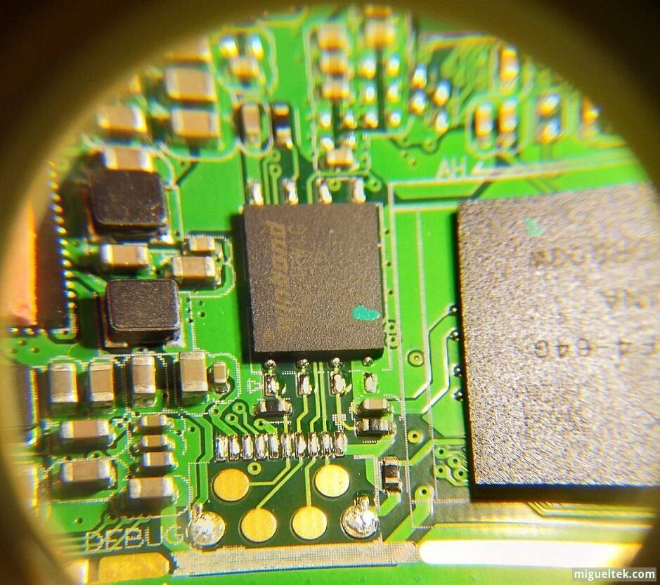
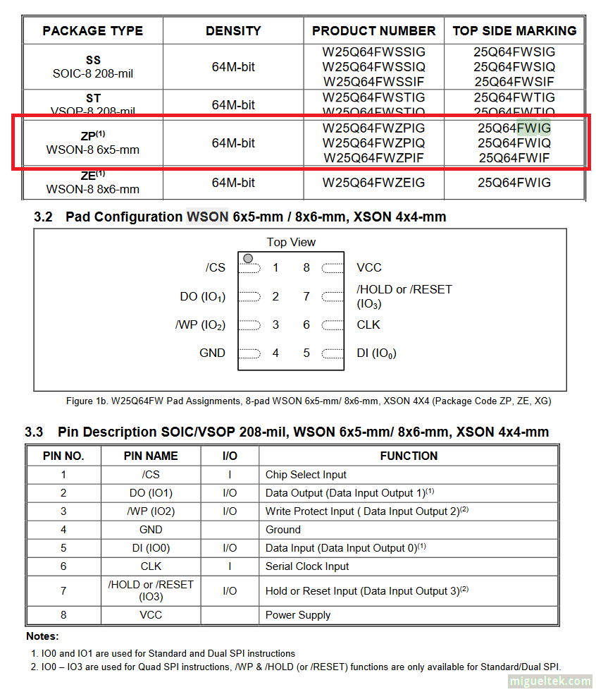
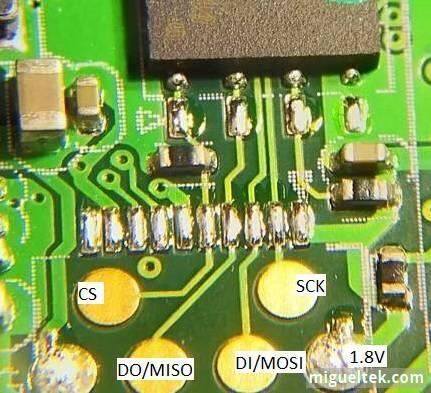
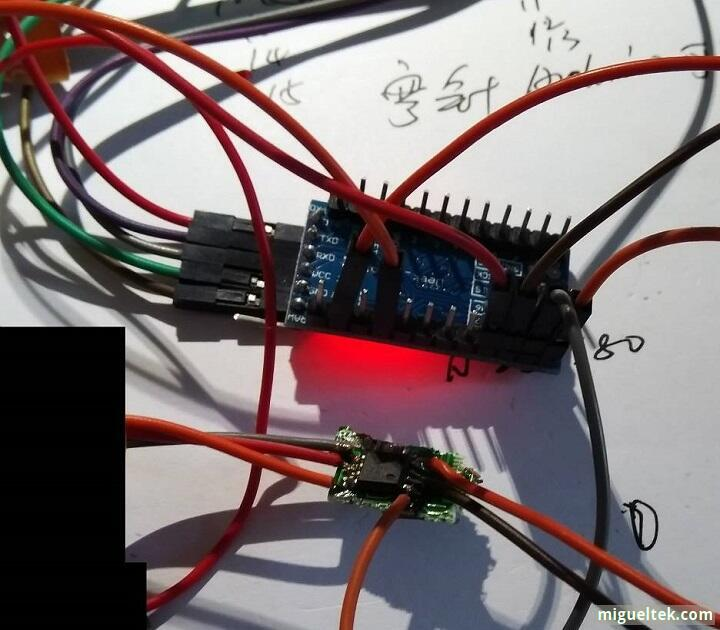
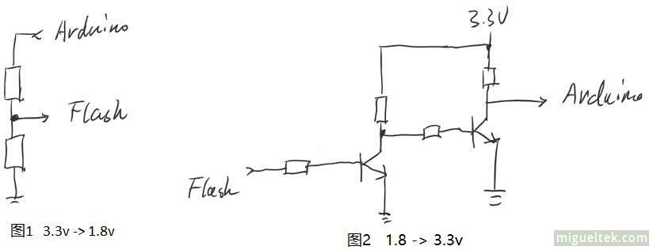
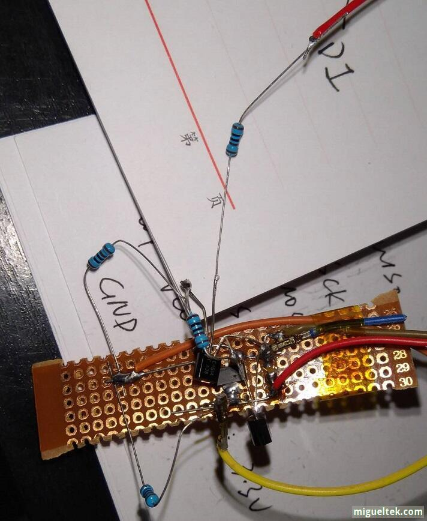
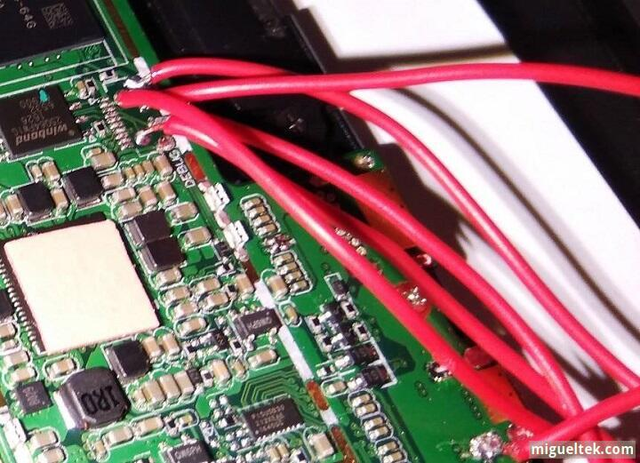
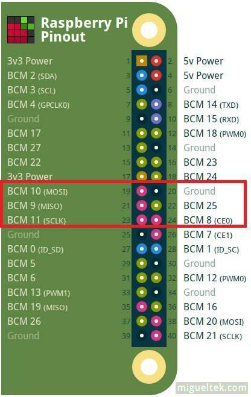
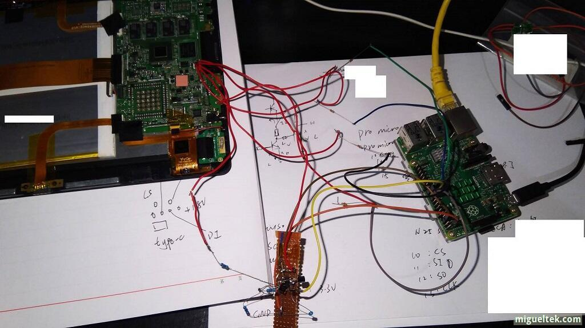
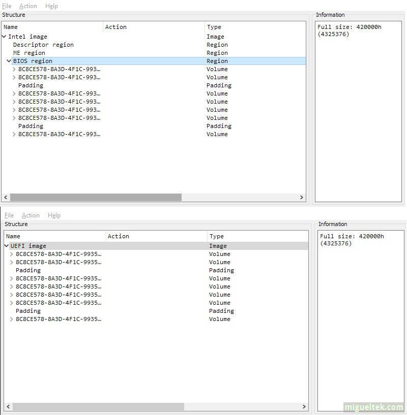

使用树莓派给变砖平板刷回 BIOS
修改 UEFI 设置把平板变砖了, 抱着死马当活马医的心态自己折腾了一下, 把 Nor Flash 重新刷写, 居然救活了.
长文预警
这篇文章比较长, 包含一些图片, 没有什么太有技术含量的东西, 毕竟学习电子这么多年我自己连个 SPI 通信都没有写过, 实在惭愧, 现在没有继续学习电子, 以前学过的东西也忘的差不多. 所以各位高手可以 Ctrl + W 了.
各位留下的朋友看个高兴就好, 如果我的操作有问题, 欢迎邮件联系我一起交流.
0x00 前情提要
最近拿出吃灰的旧平板使用, 发现微软在帮你淘汰旧设备, 全新安装的 Windows 10 1709,1803 触屏打字爆卡. 准备换回 1703, 结果发现 1703 下个月停止支持… 无奈只能安装 LTSB 2016 了, 商店什么的可以加回来, 但是 Edge 浏览器和虚拟触控板功能就没办法了, 只能将就.
安装完成后, 发现 Secure Boot 居然没有打开, 不能忍, 进入 BIOS 设置, 发现 BIOS 被重置了, 然后跟着感觉修改了一些自己需要的地方, 保存设置重启. 然后平板就变砖了, Boom! 我算是服了这山寨厂家了, 这已经是我第N次踩地雷了, BIOS设置里面有几个选项一改就变砖, 血泪的售后教训, 由于很久不用, 又忘记了这些地雷.
算了吧, 本来就是备用的, 除了看看 PDF 没啥用, 但是拿来看 PDF 确实又方便, 配合 Onenote 很好用. 找售后吧, 售后可能要我自费修理, 垃圾玩意儿我是不想花钱了.
0x01 修复前做的一些必须功课
BIOS 文件
要做修复, 必须要有 BIOS, 官方不提供, 尝试 Google 了一下 “XXX BIOS”, 只有一个外国论坛里面有人分享了一份备份出来的 BIOS 文件, 赶紧注册下载了一份. BIOS 到手, 大问题之一解决.
Flash 了解一下
接下来是拆机, 这没什么好说的, 拿塑料卡片沿着缝隙走一圈就打开了, 拆下用于散热的屏蔽罩(功能还真多…), 就能看到典型的8脚 Nor Flash 芯片了. 这类 BIOS 芯片一般是 SPI 接口的, 我的平板使用的是 Winbond 的 25Q64FWIG, 厂家还预留了测试用的焊盘, 如果不出意外, 这将大大方便了我的修复操作, 因为不用自己在引脚焊盘上焊接飞线.

在 Winbond 官方找到了芯片的 DataSheet, 根据数据表, 提一些需要的信息:
W25Q64FW
64M-bit 1.8V Serial Flash Memory with uniform 4KB sectors and Dual/Quad SPI and QPI
Single/Dual/Quad SPI and QPI operation
1.65 to 1.95V power supply
4mA active read current, 1µA power down current
以及最重要的引脚功能说明:

其实, 引脚信息也不太重要, 因为一般都是这个引脚排列.
确认 DEBUG 焊盘和 Flash 引脚的对应关系
忘了介绍下 SPI 总线, 高手们直接无视吧: SPI 总线是一种串行的通信协议, 一共使用4根信号线进行通信, 分别是: MISO(从设备输出,主设备输入), MOSI(主设备输出, 从设备输入), SCK(SPI时钟信号), CS(SPI片选).
在放大镜和万用表二极管测试功能的帮助下, 确认了焊盘的功能:

然后给平板通电, 用万用表检测 1.8V的焊盘上确实有 1.79V 左右的电压, 芯片的 WP, RESET 引脚也有1.8v 左右的电压, 正常的. 其实我还有一个山寨的逻辑分析仪, 可以用来进一步确定 SPI 信号线是否正确, 只是觉得麻烦+没有必要就没有继续进行了(后续补充: 估计这逻辑分析仪也分析不出什么来, 这板子的SPI速率应该大大超过山寨逻辑分析仪的采样率了).
0x01 编程器
网上不少帖子都说过可以用 CH3?? 芯片的编程器来编程 Flash, 但是我不想在这个破板子上花钱, 而且购买周期太久. 所以突发奇想: SPI 是一种标准总线, Arduino 有 SPI 接口可以和芯片通信, 又有串口可以和主机通信, 那么有没有人尝试过用 Ardunio 作为 Flash 的编程器呢. Google 了一下, 确实有.
Flashrom
Flashrom flashrom.org 是一个开源的跨平台的烧录工具, 提供了不少的芯片支持和编程器支持. 用于识别, 读取, 写入, 验证, 和擦除各种 Flash 芯片, 比如主板, 网卡 rom 等.
- 支持多种接口的Flash, Supports parallel, LPC, FWH and SPI flash interfaces.
- 命令行工具, 一些 programmer 需要root权限操作.
- 支持多种操作系统平台.
在 Flashrom 的 硬件支持列表 上找到了 W25Q64FW 芯片的支持, 而且是良好的支持.
运行 pacman -Sy flashrom 即可安装 flashrom 1.0.
frser-duino
frser-duino 是烧录到 Arduino 板子上的固件, 用于和主机/上位机的 flashrom 配合完成对 Flash 的读写和擦除等操作.另外一个类似的固件: serprog-duino, 但建议使用frser-duino.
先使用 ftdi 模式试试,这种方式是 USB-to-Serial 串口来连接 Arduino 板子时使用的模式.
git clone --recurse-submodules -j2 https://github.com/urjaman/frser-duino
# 编辑Makefile, 看下哪些参数需要修改下:
# MMCU?=atmega328p 正确, 其他芯片的arduino需要修改make的命令行参数传递进去
# 生成 arduino 固件
make ftdi
# 下载固件到 arduino 板子上
make flash-ftdi
注意: 用户需要是uucp组的才能访问 ttyUSB0 设备.
如果下载失败, 可能是串口速度没正确, 默认的速率是57600, 需要修改下 Makefile:
flash-ftdi:
- BLBAUD=57600 SERIAL_DEV=/dev/ttyUSB0 $(MAKE) program
+ SERIAL_DEV=/dev/ttyUSB0 $(MAKE) program
这里我又想吐槽微软了, 现在是8102年了 Hyper-V 还是不支持 USB 重定向, 连串口重定向也没有? 要实现需要使用一些第三方的工具. 幸好我的 ArchLinux 可以在虚拟机和物理机两种运行状态下直接切换, 重启到 ArchLinux 里面再次运行 make flash-ftdi 下载固件成功.
0x02 折腾, 真的很折腾
万事俱备, 只欠东风. 首先找了个坏U盾上的 Flash, 3.3v的芯片, 将 Arduino pro mini 的供电调成 3.3v, 照下面的连线方式连接:
Arduino引脚编号 SPI Flash的引脚
数字10 <----> CS
数字11 <----> MOSI
数字12 <----> MISO
数字13 <----> SCK
VCC <----> VCC
GND <----> GND
飞线连接的, 真的很魔性:

然后运行
flashrom -p serprog:dev=/dev/ttyUSB0:115200
能够正确读取到芯片的ID, 没有继续尝试读写 flash, 相当于 HelloWorld 可以了, 说明整个环境是没什么大问题了. 而且接下来还有更头疼的问题需要处理.
电平转换是一个深坑
由于 arduino 工作在 3.3v(算是超频工作了), 和 25q64fw 的工作电平不一致, 通俗的说就是: arduino 输出的信号可能损坏 Flash 及其周边电路, 而 Flash 输出的信号也无法被 Arduino 正确识别, 所以需要转换一下.
首先需要制作一个 1.8v 的电源, 翻箱倒柜地终于找到一片 AMS1117-1.8 还可能是山寨的芯片. 配合4个电容制作了一个简单的 1.8v 供电电路, 用于给 Flash 提供工作电压.
然后是4根信号线的电平转换, Arduino 输出的3个信号(SCK, CS, MOSI)需要转换成 1.8v 电平, Flash 输出的 1.8v 信号(MISO)需要转换成 3.3v. 我手上有 TI 的 SN74LVC16T245 电平转换芯片模块可以用来转换.
但就是这个模块坑了我一大把, 按照 Datasheet 里面的说明来使用, 设置好各自的转换方向, 居然导致 Arduino 的主控发烫? 要么就是 Flash 发烫. 使用万用表测试转换模块的输入端, 居然是低电平??!! 这就真的很迷了, 不应该是高阻态吗?
这个模块混乱的输入问题让我不敢继续使用, 买来第一次使用就跪, 没时间折腾它. 一共才4根信号线而已, 自己 DIY 一个吧.
失败的 DIY
使用下面的电路转换电平, 电脑上已经没有 EDA 软件了, 所以画电路图只好用 OneNote 手绘了一下将就看看吧.

图一用来将 MOSI, SCK, CS 转换成 1.8v 信号电平, 使用两个电阻分压, 经过计算和选择合适的电阻, 使输出的电压在 1.8v 以下.
图二用来将 MISO 信号转换成 3.3v 电平. 使用两个 NPN 三极管和4个 1kΩ 的电阻.
再来感受一下魔性的飞线焊接:

主要是懒不想认真布线+不敢用面包板, 想自己用了快10年电络铁了, 最近几年没怎么用技能严重倒退…
然后, 把转换后的信号线连接到平板的 DEBUG 焊盘:

失败
连接好后, 使用 flashrom 尝试读取 chip ID, 失败, 没有检测到 Flash. 之后各种折腾, 修改, 还是不行, 只能接受现实: 要么电平转换电路太渣, SPI 速度太高导致通信失败, 要么根本不能 “在线” 烧写, 需要取下来.
然后去本地的电子商场, 询问了不少卖家都没有找到合适的电平转换模块, 有一个热心的卖家倒是愿意帮我试试焊接下来编程, 然而他的编程器根本不支持这些新的 1.8v Flash.
又去旁边的电脑城, 找了不少维修点, 希望能帮忙刷一下 BIOS, 然而没有人接这个活, 称做不了/没有合适的编程器. 估计太麻烦而且 不赚钱 不好收费.
放弃治疗, 准备回家, 结果下雨了, 被困在电子商城. 无聊之中看 flashrom 官网发现有 Raspberry Pi 这个页面. 对啊, RPI 也有标准的 SPI 接口, 而且还能自己定义 SPI 的速度, 也许我可以尝试自己 DIY 的山寨电平转换电路 + 低一点的 SPI 速度.
0x03 树莓派救砖
由于 SPI 总线没有标准的时钟速率, 全看 host 的 sck 信号, 所以可以使用 flashrom 操作 SPI 设备, 通过较低的 SPI 速度来烧录.
启用 SPI 支持
我使用的是 Arch Linux ARM, 只需要修改 config.txt, 添加一行:
device_tree_param=spi=on
重启后, ls -l /dev/spidev* 可以看到设备就 OK.
连接 Flash
还是先使用U盾的 Flash 测试.
树莓派的40针接口有一个焊盘是正方形的, 那就是 pin1, pin1 旁边靠近板子边缘的 pin 是第2脚, 具体可以参考树莓派官方的文档.
这里有一张网上的参考图, 具体来源我忘了, 如果侵犯了您的版权请联系我删除.

红框中就是我们需要用到的 SPI 引脚:
树莓派引脚号 Flash芯片的引脚
25 GND
24 CS
23 SCK
21 DO/MISO
19 DI/MOSI
17 VCC + RESET + WP
一些注意事项:
- 树莓派的IO口电压不能超过3.3V !!!, 连接时一定小心, 不要把 3.3V 排针边上的 5V 接进去了, 不然可能损坏树莓派.
- 我不太清楚这个 3.3v 是从树莓派的哪里来的, 和哪些电路连接, 但是我在连接时, 由于电源转换板有 100μF 的电容器, 树莓派直接死机. 所以建议在连接 Flash 之前先关闭树莓派的电源, 接好后再开机.
测试
默认的, 要操作 SPI 设备需要 root 权限, 所以下面的命令需要 sudo 运行或者 su 提权后执行.
# 使用 1MHz 的 SPI 速度, spispeed=xxx KHz
flashrom -p linux_spi:dev=/dev/spidev0.0,spispeed=1000
可以读取到 Flash 的 ID!
尝试降低 SPI 速率
[root@alarmpi ~]# flashrom -p linux_spi:dev=/dev/spidev0.0,spispeed=10
flashrom v1.0 on Linux 4.14.52-1-ARCH (armv7l)
flashrom is free software, get the source code at https://flashrom.org
Using clock_gettime for delay loops (clk_id: 1, resolution: 1ns).
Found Nantronics flash chip "N25S80" (1024 kB, SPI) on linux_spi.
===
This flash part has status UNTESTED for operations: PROBE READ ERASE WRITE
The test status of this chip may have been updated in the latest development
version of flashrom. If you are running the latest development version,
please email a report to flashrom@flashrom.org if any of the above operations
work correctly for you with this flash chip. Please include the flashrom log
file for all operations you tested (see the man page for details), and mention
which mainboard or programmer you tested in the subject line.
Thanks for your help!
No operations were specified.
比较一下不同 SPI 速度下的操作速度:
# perform a read test @ 1MHz
[root@alarmpi ~]# time flashrom -p linux_spi:dev=/dev/spidev0.0,spispeed=1000 -r n25s80.bin
flashrom v1.0 on Linux 4.14.52-1-ARCH (armv7l)
flashrom is free software, get the source code at https://flashrom.org
Using clock_gettime for delay loops (clk_id: 1, resolution: 1ns).
Found Nantronics flash chip "N25S80" (1024 kB, SPI) on linux_spi.
===
This flash part has status UNTESTED for operations: PROBE READ ERASE WRITE
The test status of this chip may have been updated in the latest development
version of flashrom. If you are running the latest development version,
please email a report to flashrom@flashrom.org if any of the above operations
work correctly for you with this flash chip. Please include the flashrom log
file for all operations you tested (see the man page for details), and mention
which mainboard or programmer you tested in the subject line.
Thanks for your help!
Reading flash... done.
real 0m9.088s
user 0m0.138s
sys 0m0.052s
# perform a read test @ 100KHz
[root@alarmpi ~]# time flashrom -p linux_spi:dev=/dev/spidev0.0,spispeed=100 -r n25s80-100kHz.bin
flashrom v1.0 on Linux 4.14.52-1-ARCH (armv7l)
flashrom is free software, get the source code at https://flashrom.org
Using clock_gettime for delay loops (clk_id: 1, resolution: 1ns).
Found Nantronics flash chip "N25S80" (1024 kB, SPI) on linux_spi.
===
This flash part has status UNTESTED for operations: PROBE READ ERASE WRITE
The test status of this chip may have been updated in the latest development
version of flashrom. If you are running the latest development version,
please email a report to flashrom@flashrom.org if any of the above operations
work correctly for you with this flash chip. Please include the flashrom log
file for all operations you tested (see the man page for details), and mention
which mainboard or programmer you tested in the subject line.
Thanks for your help!
Reading flash... done.
real 1m24.410s
user 0m0.097s
sys 0m0.116s
连上坏平板再测试
这次的电平转换电路又缩水了, 3.3 -> 1.8v 直接用了一个 600Ω 的电阻串一下:

谢天谢地, 读取到了!!!!! 果然速度无法太高!
[root@alarmpi ~]# flashrom -p linux_spi:dev=/dev/spidev0.0,spispeed=100
flashrom v1.0 on Linux 4.14.52-1-ARCH (armv7l)
flashrom is free software, get the source code at https://flashrom.org
Using clock_gettime for delay loops (clk_id: 1, resolution: 1ns).
Found Winbond flash chip "W25Q64.W" (8192 kB, SPI) on linux_spi.
No operations were specified.
[root@alarmpi ~]# flashrom -p linux_spi:dev=/dev/spidev0.0,spispeed=1000
flashrom v1.0 on Linux 4.14.52-1-ARCH (armv7l)
flashrom is free software, get the source code at https://flashrom.org
Using clock_gettime for delay loops (clk_id: 1, resolution: 1ns).
No EEPROM/flash device found.
Note: flashrom can never write if the flash chip isn't found automatically.
经过多次测试, SPI 时钟在 600KHz 时能正常读写, 再高就不稳定了. 都是自己的垃圾电平转换的锅.
0x04 正式开工
备份 BIOS
我分别用低一点的速度(100KHz)和能使用的最高速度(600KHz)备份了一下 Flash.
[root@alarmpi ~]# time flashrom -p linux_spi:dev=/dev/spidev0.0,spispeed=600 -r xxx-bad-bios-600khz.bin
flashrom v1.0 on Linux 4.14.52-1-ARCH (armv7l)
flashrom is free software, get the source code at https://flashrom.org
Using clock_gettime for delay loops (clk_id: 1, resolution: 1ns).
Found Winbond flash chip "W25Q64.W" (8192 kB, SPI) on linux_spi.
Reading flash... done.
real 1m53.725s
user 0m0.145s
sys 0m0.421s
[root@alarmpi ~]# time flashrom -p linux_spi:dev=/dev/spidev0.0,spispeed=100 -r xxx-bad-bios-100khz.bin
flashrom v1.0 on Linux 4.14.52-1-ARCH (armv7l)
flashrom is free software, get the source code at https://flashrom.org
Using clock_gettime for delay loops (clk_id: 1, resolution: 1ns).
Found Winbond flash chip "W25Q64.W" (8192 kB, SPI) on linux_spi.
Reading flash... done.
real 11m13.411s
user 0m0.132s
sys 0m0.543s
然后 sha1sum 比较了一下, 一样的, 那么后续操作中可以使用600KHz的速度了, 不然刷写一下半小时简直难受.
刷新的 BIOS
这里有一个严重问题, 网上下载的 bios .rom 文件真的只有 UEFI BIOS 部分, 而 Flash 里面还有 Intel ME 等固件, 不能直接写入 .rom 文件. 需要做一下处理, 下个章节在讨论这个问题, 这里我烧录了处理后的 Flash 文件:
[root@alarmpi ~]# time flashrom -p linux_spi:dev=/dev/spidev0.0,spispeed=600 -w xxx-good-bios-replaced-full-flash.bin
flashrom v1.0 on Linux 4.14.52-1-ARCH (armv7l)
flashrom is free software, get the source code at https://flashrom.org
Using clock_gettime for delay loops (clk_id: 1, resolution: 1ns).
Found Winbond flash chip "W25Q64.W" (8192 kB, SPI) on linux_spi.
Reading old flash chip contents... done.
Erasing and writing flash chip... Erase/write done.
Verifying flash... VERIFIED.
real 3m57.244s
user 0m4.839s
sys 0m1.081s
花了几分钟, 终于成功写入BIOS, 然后, 断开 SPI DO 数据线和 1.8V, 长按开机, 没反应… 慌了…
撤掉所有SPI数据线, 长按, 还是没反应… 内心相当慌张…
抱着司马当活马医的心态, 长按电源键, 连接电源, 10多秒了还是没反应, 就在准备放弃时, 它居然亮了, 亮了!!!
不仅亮了, 连Bitlocker自动解锁都没有受到影响! Bitlocker还安全吗, 我都动BIOS了…
后续
-
启动后, 发现设备管理器里面多了几个设备, 估计是 GPS 的, 难道国外的月亮更圆, 出口版带 GPS ? -> 解决方法: 进入 BIOS, 恢复出厂设置, 这几个不存在设备应该被 BIOS 禁用了, 或者可以手动禁用, 启动后就没了.
-
发现麦克风设备不见了, Windows 显示没有安装麦克风 -> 解决方案: 卸载 SST Audio Device 和 Codec 设备, 重新扫描, OK.
-
偶尔无法烧录: -> 连接好线关闭rpi电源再开机
-
弄好后不知道为什么自动重启了一次, 在计算机睡眠时, 不是 Windows 蓝屏导致的. 无奈, 只好先观察.
0xff 修改 Raw Flash Image
“Raw Flash Image” 是我自己随便取的名字, 就是直接读取的 Flash 芯片里面的全部内容.
使用网友分享的 BIOS .rom 并不能写入, 毕竟文件不一样大, 而且我自己使用二进制比较工具比较过, .rom 的内容位于 “Raw Flash Image” 文件的中间, 直接写入肯定是不可以的, 而且 flashrom 网站上也说了, ME firmware 一般会共享一部分 Flash 空间.
[root@alarmpi ~]# flashrom -p linux_spi:dev=/dev/spidev0.0,spispeed=600 -w xxx.rom
flashrom v1.0 on Linux 4.14.52-1-ARCH (armv7l)
flashrom is free software, get the source code at https://flashrom.org
Using clock_gettime for delay loops (clk_id: 1, resolution: 1ns).
Found Winbond flash chip "W25Q64.W" (8192 kB, SPI) on linux_spi.
Error: Image size (4325376 B) doesn't match the flash chip's size (8388608 B)!
使用 UEFITool 修改镜像, 也是自己运气好, 直接 Google UEFI Mod Tool 就发现了 UEFITool 这个工具, 用这个工具打开两个文件就一目了然了:

上面是 “Raw Flash Image” , 下面是 .rom 文件.
接下来对备份出来的 Flash 镜像进行操作, 右键点击 BIOS region, 选择替换, 替换为网友上传的 .rom 文件, 保存映像文件即可.
烧录进去就OK了.
继续作si
想把厂家丑到爆的 Logo 替换了. Ctrl + F 搜索 7BB28B99-61BB-11D5-9A5D-0090273FC14D 这个GUID, 一路展开, 定位到 raw section, 右键 extract body, 把导出的文件改名 jpg, 这不就是厂家丑爆的 logo 吗, 还是 Windows 画图做的…
选择 raw section 的 replace body, 使用自己修改后的原图, 保存Image, 烧录进去, 无法启动. Boom,,, 重新烧录原厂Logo的BIOS, OK. 看来丑爆的 Logo 是甩不掉了, Linux 还能少看一会儿, 并且能替换自己喜欢的图片, Windows启动就只能看这丑爆的图了.
因为我自己也没替换开机 Logo 成功, 就不多说了, 反正不影响, 最近比较忙就暂时不折腾了.